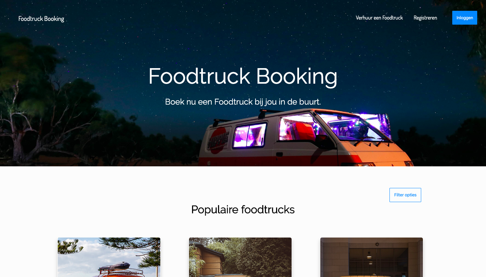
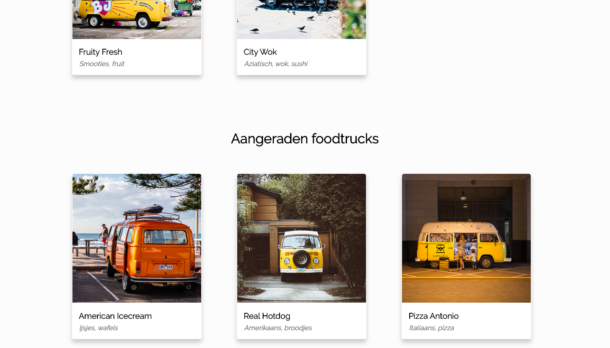
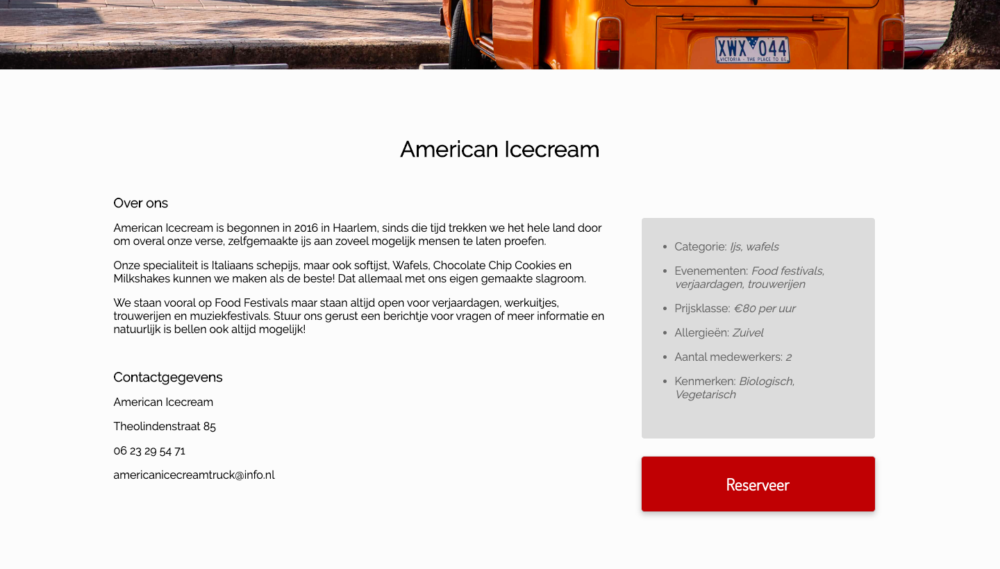

Foodtruck Booking Website
Voor het vak Front-end Development, wat een vervolg voor de vakken internetstandaarden en programmeren was, heb ik een website geschreven voor Foodtruck Booking in HTML, CSS en Javascript. De focus van de website lag vooral bij de paginas responsive maken en toevoegen van subtiele animaties en hovers. Uiteindelijk heb ik deze website omgetoverd tot mijn portfolio.
  Link naar website
Met de onderstaande link kan je de website bekijken:
Zie hier de website